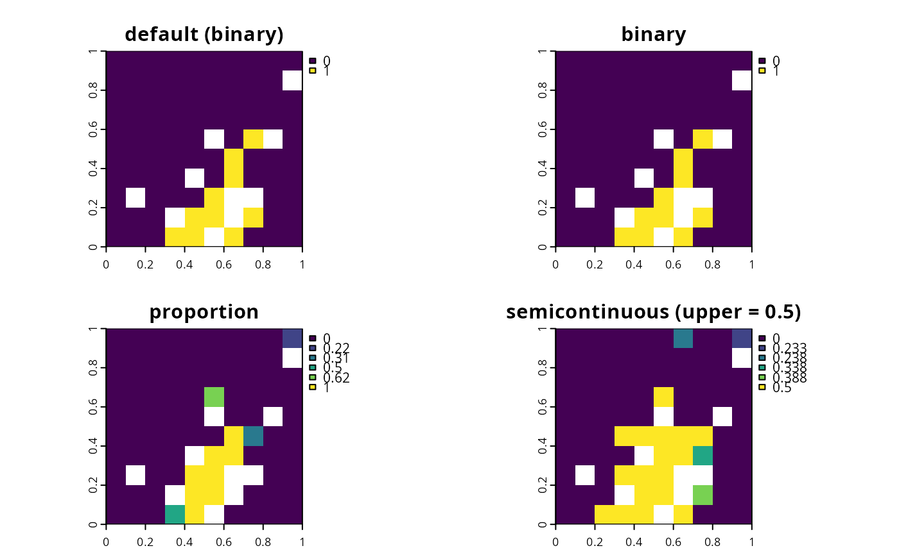

Conservation planning problems involve making decisions on
how different planning units will be managed. These decisions might involve
turning an entire planning unit into a protected area, turning part
of a planning unit into a protected area, or allocating a planning
unit to a specific management zone. If no decision is explicitly added to a
problem(), then binary decisions will be used by default.
Only a single type of decision can be added to a conservation
planning problem(). Note that if multiple decisions are added
to a problem, then the last one added will be used.
The following decisions can be added to a conservation planning
problem():
add_binary_decisions()Add a binary decision to a
conservation planning problem. This is the classic decision of
either prioritizing or not prioritizing a planning unit. Typically, this
decision has the assumed action of buying the planning unit to include
in a protected area network. If no decision is added to a problem object
then this decision class will be used by default.
add_proportion_decisions()Add a proportion decision to
a conservation planning problem. This is a relaxed decision
where a part of a planning unit can be prioritized, as opposed to the
default of the entire planning unit. Typically, this decision
has the assumed action of buying a fraction of a planning unit to
include in a protected area network.
add_semicontinuous_decisions()Add a semi-continuous
decision to a conservation planning problem. This decision is
similar to add_proportion_decision except that it has an upper
bound parameter. By default, the decision can range from prioritizing
none (0%) to all (100%) of a planning unit. However, a upper
bound can be specified to ensure that at most only a fraction
(e.g. 80%) of a planning unit can be preserved. This type of
decision may be useful when it is not practical to conserve the
entire area encompassed by any single planning unit.
Other overviews:
constraints,
importance,
objectives,
penalties,
portfolios,
solvers,
summaries,
targets
# load data
data(sim_pu_raster, sim_features)
# create basic problem and using the default decision types (binary)
p1 <- problem(sim_pu_raster, sim_features) %>%
add_min_set_objective() %>%
add_relative_targets(0.1) %>%
add_default_solver(verbose = FALSE)
# create problem with manually specified binary decisions
p2 <- p1 %>% add_binary_decisions()
# create problem with proportion decisions
p3 <- p1 %>% add_proportion_decisions()
# create problem with semicontinuous decisions
p4 <- p1 %>% add_semicontinuous_decisions(upper_limit = 0.5)
# \dontrun{
# solve problem
s <- stack(solve(p1), solve(p2), solve(p3), solve(p4))
# plot solutions
plot(s, main = c("default (binary)", "binary", "proportion",
"semicontinuous (upper = 0.5)"))

# }